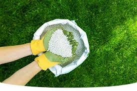
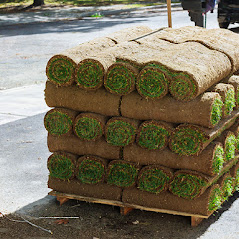
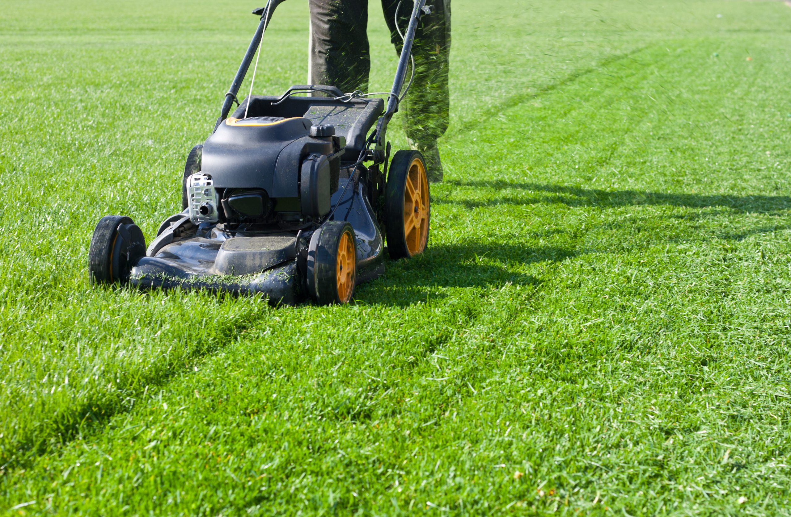
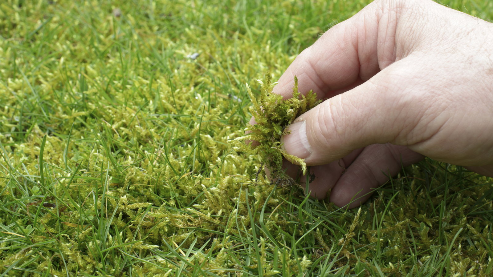
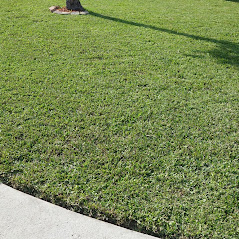

1) Feed Your Lawn

Regular lawn care is important for maintaining a lush, healthy yard. You should only fertilize your lawn in
the spring.
Our top tip is to fertilize your lawn only when rain is expected. The water will dissolve the fertilizer
into the soil to reach the roots.
If it doesn’t rain soon, use a hose to water generously.
You should notice results in a week, with evidence of a greener lawn.
2) Get Rid of Weeds

There are many types of weeds, and your lawn may have been exposed to at least one. Removing weeds is
essential for the aesthetics
and health of your lawn.
You can either pull the roots and weeds up by hand or use a tool. If the area affected by weeds is large,
consider investing in a nontoxic herbicide.
3) Mow your lawn

Although it is not everyone’s favourite outdoor job, it is an essential one. It is a good idea cut the grass
every other week during the summer, and every other week throughout the year. Regular mowing improves the
grass’ spread and leaves fewer spots.
Mowing can help to reduce the rapid growth of weeds.
Mowing Tip
Increase the height of your grass blades as autumn turns into winter. Frost damage can occur if the grass
grows too short during the cold months.
4) How to deal with moss

While moss can look beautiful in natural settings like forests, it is a problem in lawns. Poor drainage can
lead to moss growth in lawns. Spring is the best time for moss problems to be addressed.
You must deal with the moss quickly. This will slow down healthy grass growth.
You must identify the root cause of moss before you can treat it. This could be excess thatch, shade, soil
clay, or anything else. You can try a moss killer if nothing else works.
5) Water your lawn

A good lawn will also require regular watering. You should water your lawn often, especially if you have a
new lawn. A healthy lawn will be able survive without much water, except in drought situations.